| Model | Relative share of global optima with consistent commitments | Number of global optima with consistent commitments | Number of global optima |
|---|---|---|---|
| QuadraticGlobalRE | 0.741 | 529359 | 714584 |
| LinearGlobalRE | 0.771 | 540556 | 700830 |
| QuadraticLocalRE | 0.741 | 525490 | 709289 |
| LinearLocalRE | 0.769 | 554525 | 721096 |
5 Consistency
5.1 Background
Consistency is commonly seen as a necessary condition of coherence. Achieving consistency in RE is, therefore, of utmost importance. In contrast to the desiderata of faithfulness, systematicity and account (see Section 1.1), the desideratum of consistency is not hard-wired into the model. Although the agent is not allowed to choose commitments with flat contradictions (i.e., commitment sets of the form \(\{s_i,\dots, \neg s_i\}\)), they can choose dialectically inconsistent commitments (i.e., commitments that are inconsistent with respect to the inferential relationships encoded in the dialectical structure \(\tau\)). Or, more formally, a dialectically inconsistent set of commitments may maximize the achievement during the step of adjusting commitments. Accordingly, the process might end at a fixed point with dialectically inconsistent commitments. The question is, therefore, whether the explicitly modelled desiderata and the specification of the process are sufficiently conducive towards dialectical consistency.1
In this chapter, we analyze the dialectical consistency of inputs and outputs (fixed points and global optima) of RE simulations, which can be examined from three different perspectives:
- the consistency of output commitments
- the “consistency case” that arises from combining the consistency status of initial and output commitments
- the consistency of the union of output commitments and theory
Concerning 2., the juxtaposition of initial and output commitments allows for four cases, which are labelled as follows:
| endpoint commitments consistent | endpoint commitment inconsistent | |
|---|---|---|
| initial commitments consistent | consistency preserving (CP) | consistency eliminating (CE) |
| initial commitments inconsistent | inconistency eliminating (IE) | inconsistency preserving (IP) |
CP Cases preserve or “transfer” consistency between initial and endpoint commitments. In IE cases, inconsistent initial commitments are revised for consistent endpoint commitments. IP cases fail to eradicate initial inconsistencies, and finally, there may be CE cases if inconsistencies are introduced to initially consistent commitments.
From the viewpoint of model consolidation, the cases are interesting and relevant in various respects. High shares of IE cases would speak in favour of the model’s revisionary power and signify progress towards establishing coherence by RE. Frequent IP cases, in turn, would speak against the model’s revisionary power with respect to inconsistent initial commitments. Moreover, this could fuel the objection that RE (or the present model thereof) is overly conservative, such that “garbage in” (inconsistent initial commitments) leads to “garbage out” (inconsistent fixed point/global optimum commitments). High relative shares of CP cases are a desirable feature. Finally, frequent CE cases would be a truly worrisome result, as they would indicate that the model leads to a worsening in terms of consistency.
5.2 Results
Note
The results of this chapter can be reproduced with the Jupyter notebook located here.
5.2.1 Consistent Outputs
5.2.1.1 Overall Results
| Model | Relative share of fixed points with consistent commitments | Number of fixed points with consistent commitments | Number of fixed points |
|---|---|---|---|
| QuadraticGlobalRE | 0.728 | 333436 | 458147 |
| LinearGlobalRE | 0.726 | 227000 | 312783 |
| QuadraticLocalRE | 0.688 | 404941 | 588236 |
| LinearLocalRE | 0.82 | 187163 | 228122 |
| Model | Relative share of fixed points with consistent commitments | Number of fixed points with consistent commitments | Number of fixed points |
|---|---|---|---|
| QuadraticGlobalRE | 0.708 | 374476 | 528616 |
| LinearGlobalRE | 0.726 | 227097 | 313002 |
| QuadraticLocalRE | 0.735 | 1463131 | 1991852 |
| LinearLocalRE | 0.952 | 1240692 | 1303077 |
Observations: Consistent Outputs
- Overall, the relative share of consistent output commitments is high for all model variants and output types, roughly ranging from 0.69 to 0.95
- The overall relative share of consistent global optima commitments is slightly boosted for linear model variants compared to their quadratic counterparts in Table 5.1.
- The relative shares of consistent commitments among fixed points (result perspective: Table 5.2, and process perspective: Table 5.3) is slightly lower than the corresponding results for global optima in Table 5.1 for
QuadraticGlobalRE,QuadraticLocalRE, andLinearGlobalRE LinearLocalREexhibits substantially higher relative shares of consistent commitments among fixed points (result and process perspective)- The number of fixed points reached through different branches (process perspective) in local model variants is substantially higher than for global model variants (Table 5.3)
5.2.1.2 Results Grouped by Sentence Pool Size
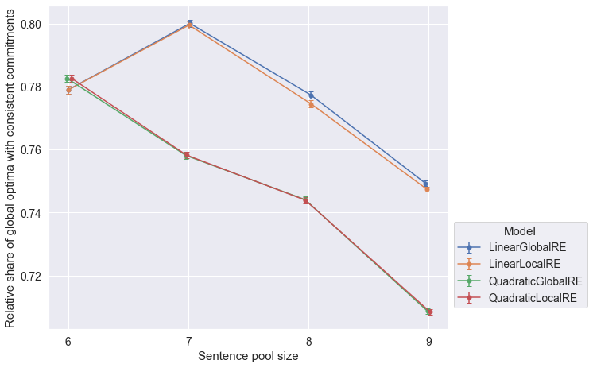


Observations
- The relative share of global optima with consistent commitments slighty decrease for larger sentence pool sizes (Figure 5.4).
- The closeness of results of
QuadraticGlobalREandQuadraticLocalRE, as well asLinearGlobalREandLinearLocalREin Figure 5.4 is due to the fact, that local variants rely on their global counterparts to determine global optima. Differences arise due to the exclusion of different erroneous runs. - The relative share of fixed points with consistent commitments slightly decreases for larger sentence pool sizes (both perspectives in Figure 5.5 and Figure 5.6) for
QuadraticGlobalRE,QuadraticLocalRE, andLinearGlobalRE. - In contrast, for
LinearLocalRE, the relative share of fixed points with consistent commitments remains roughly constant (result perspective in Figure 5.5) or sligtly increases (process perspective in Figure 5.6)
5.2.1.3 Results Grouped by Configuration of Weights
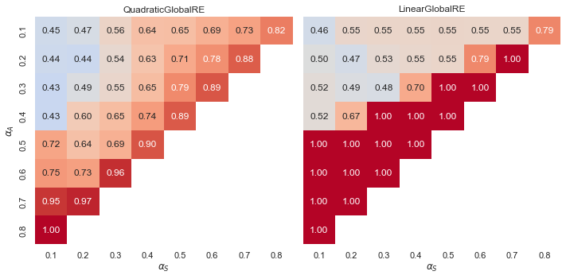
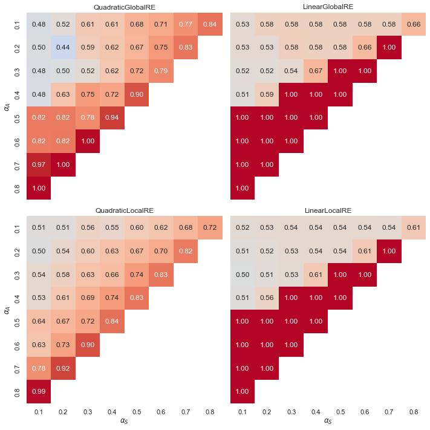
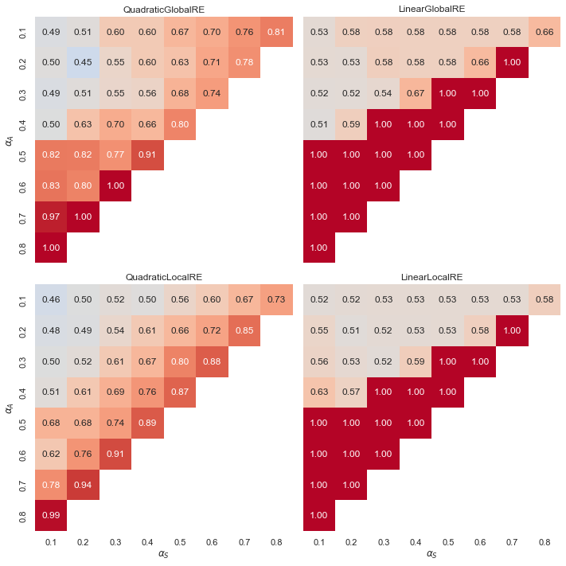
Observations
- Linear models exhibit a “tipping line” for the relative share of global optima and fixed points with consistent commitments. For \(\alpha_{A} > \alpha_{F}\), the relative share is consistently 1.0. See Appendix A for an explanation.
- In contrast, quadratic models show a gradient of smoother transitions between relative shares, increasing with higher weights for \(\alpha_{A}\), and also to some extent with higher weights for \(\alpha_{A}\).
5.2.2 Consistency Cases
The results of this section are based on a more fine-grained distinction of cases that depend on the consistency status of initial and output commitments.
Note that the relative shares of cases have been calculated for consistent and inconsistent initial commitments separately. For example, the relative share of inconsistency eliminating cases (inconsistent input, consistent output) among global optima has been calculated with respect to all global optima that result from inconsistent inital commitments.
Consequently, the relative share of inconsistency eleminating and inconsistency preserving cases add up to 1.0, and so do the relative shares of consistency preserving and consistency eliminating cases.
5.2.2.1 Overall Results
| Model | Relative share of consistency eliminating cases | Relative share of consistency preserving cases | Number of global optima from consistent initial commitments | Relative share of inconsistency preserving cases | Relative share of inconsistency eliminating cases | Number of global optima from inconsistent initial commitments |
|---|---|---|---|---|---|---|
| QuadraticGlobalRE | 0.053 | 0.947 | 386131 | 0.501 | 0.499 | 328453 |
| LinearGlobalRE | 0.024 | 0.976 | 366296 | 0.453 | 0.547 | 334534 |
| QuadraticLocalRE | 0.053 | 0.947 | 384850 | 0.504 | 0.496 | 324439 |
| LinearLocalRE | 0.023 | 0.977 | 372362 | 0.453 | 0.547 | 348734 |
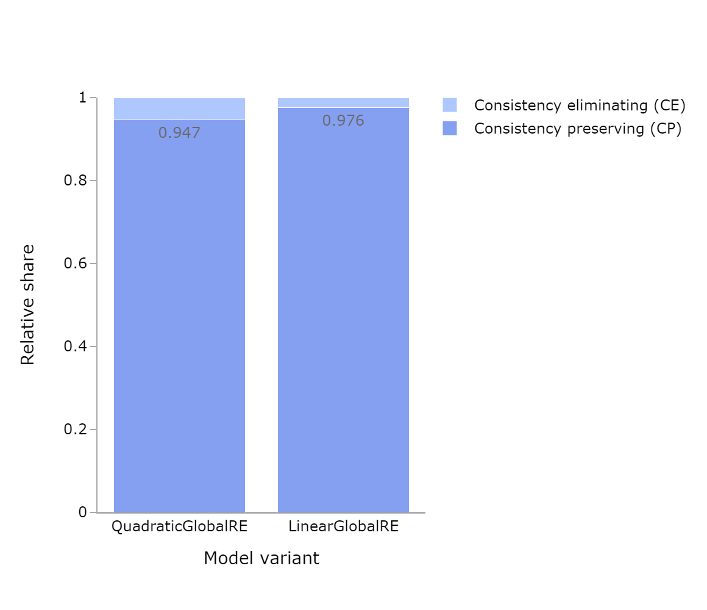
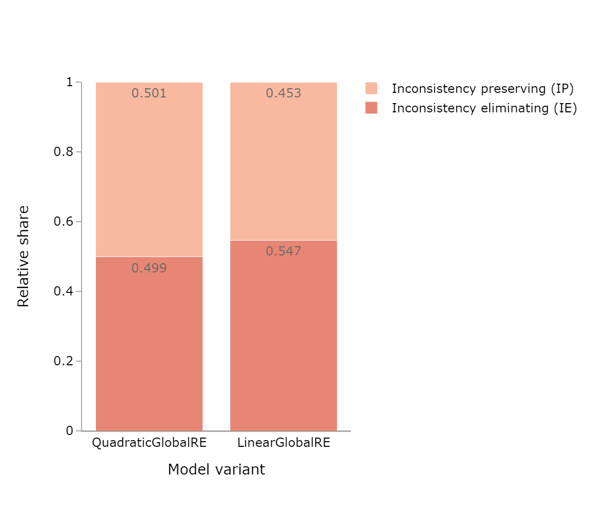
| Model | Relative share of consistency eliminating cases | Relative share of consistency preserving cases | Number of fixed points from consistent initial commitments | Relative share of inconsistency preserving cases | Relative share of inconsistency eliminating cases | Number of fixed points from inconsistent initial commitments |
|---|---|---|---|---|---|---|
| QuadraticGlobalRE | 0.041 | 0.959 | 246823 | 0.543 | 0.457 | 211324 |
| LinearGlobalRE | 0.016 | 0.984 | 168946 | 0.577 | 0.423 | 143837 |
| QuadraticLocalRE | 0.045 | 0.955 | 278450 | 0.552 | 0.448 | 309786 |
| LinearLocalRE | 0.014 | 0.986 | 119476 | 0.361 | 0.639 | 108646 |
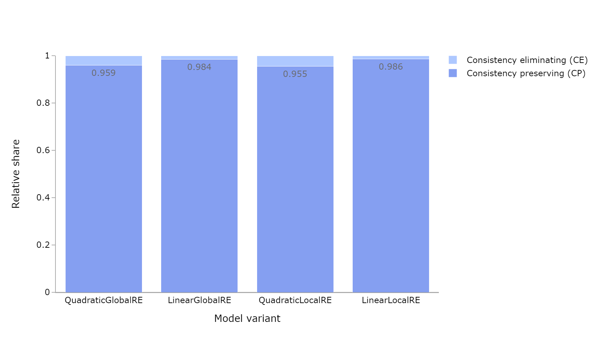

| Model | Relative share of consistency eliminating cases | Relative share of consistency preserving cases | Number of fixed points from consistent initial commitments | Relative share of inconsistency preserving cases | Relative share of inconsistency eliminating cases | Number of fixed points from inconsistent initial commitments |
|---|---|---|---|---|---|---|
| QuadraticGlobalRE | 0.043 | 0.957 | 264780 | 0.541 | 0.459 | 263836 |
| LinearGlobalRE | 0.016 | 0.984 | 169026 | 0.578 | 0.422 | 143976 |
| QuadraticLocalRE | 0.057 | 0.943 | 916286 | 0.443 | 0.557 | 1075566 |
| LinearLocalRE | 0.006 | 0.994 | 615748 | 0.085 | 0.915 | 687329 |
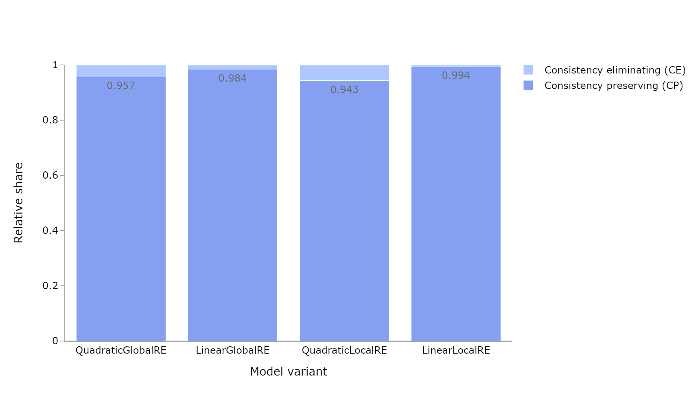

Observations: Consistency Cases
- The relative share of consistency-preserving cases is high for all model variants and output types (Figure 5.7,Figure 5.9, and Figure 5.11). Consistency-eliminating cases occur very rarely.
- The relative share of inconsistency preserving cases slightly exceed the inconsistency eliminating cases for global optima and fixed points of
QuadraticGlobalRE,QuadraticLocalRE, as well asLinearGlobalRE(Figure 5.8, Figure 5.10, and Figure 5.12). - The result perspective makes clear that the linear local model variant reaches inconsistent output commitments from both consistent and inconsistent initial commitments (Figure 5.9 and Figure 5.10), but the process perspective reveals that only very few branches result in these inconsistent output commitments (Figure 5.11 and Figure 5.12).
5.2.2.2 Results Grouped by Sentence Pool Size
Inconsistency Eliminating Cases 

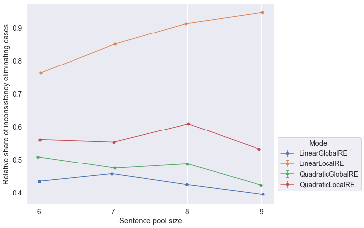
Consistency Preserving Cases 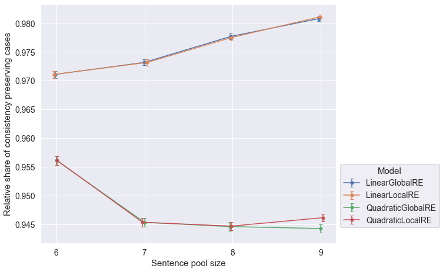

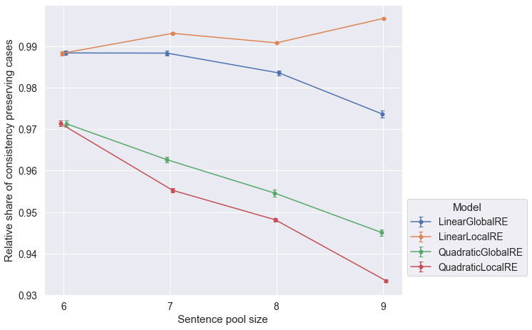
Observations
LinearLocalREis the only model that tends to perform better with increasing sentence pool sizes with respect to all output types and conistency cases.
5.2.2.3 Results Grouped by Configuration of Weights
Due to the fact, that inconsistency eliminating and inconsistency preserving cases, as well as consistency eliminating and consistency preserving cases are complementary, we confine the presentation of results to two cases.
Inconsistency Eliminating Cases


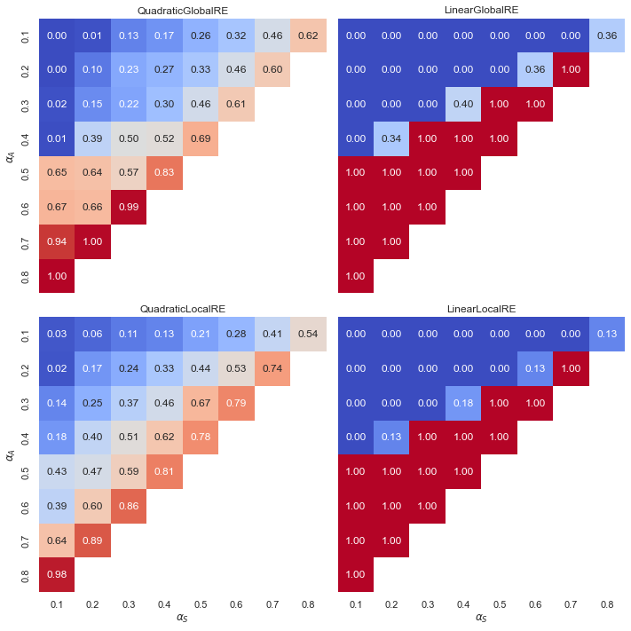
Observations: Inconsistency eliminating cases (IE)
- Linear models exhibit a “tipping line” for IE cases among both global optima and fixed points. There are no IE cases where \(\alpha_{A} < \alpha_{F}\), i.e. initial inconsistencies are never removed. In turn, the relative share of IE cases for \(\alpha_{A} > \alpha_{F}\) is 1.0, i.e. initial inconsistencies are always removed. See Appendix A for an explanation.
- The case with non extreme values in linear models occur where \(\alpha_{A} = \alpha_{F}\).
- In contrast, quadratic models have smooth transitions. High weights for account and systematicity, resulting in low weights for faithfulness, benefit the relative share of IE cases among global optima and fixed points.
- The relative shares of IE cases among fixed points (process perspective) in local model variants (Figure 5.19) are slightly boosted in comparison to the consideration of unique fixed points (result perspectve) (Figure 5.18).
Consistency Preserving Case (CP)


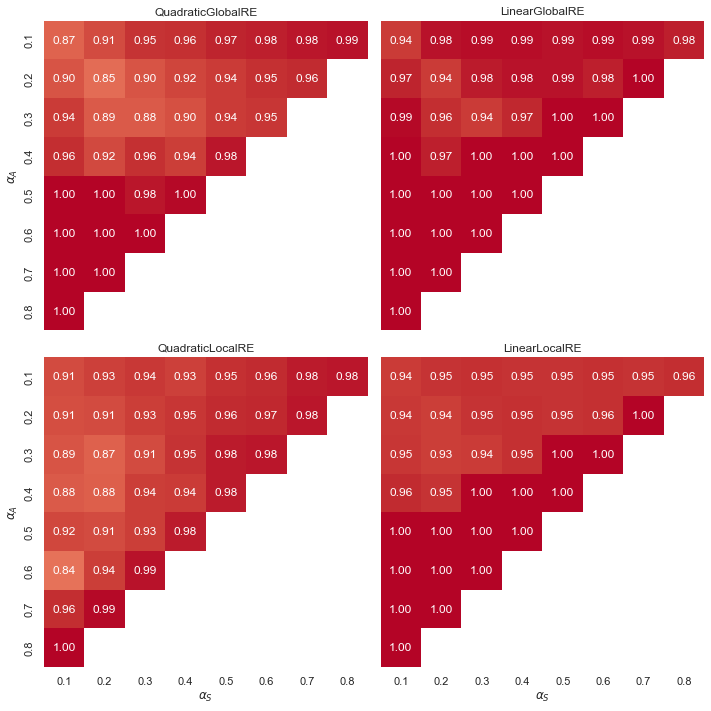
Observations: Consistency Preserving Cases (CP)
- Overall, CP cases occur very frequently for all model variants and output types. In turn, the relative shares of CE cases (\(1.0-CP\)) are very low.
- Linear models exhibit a “tipping line” for CP cases among both global optima and fixed points. For \(\alpha_{A} > \alpha_{F}\), consitency is always preserved. In turn, CE cases occur only for \(\alpha_{A} \leq \alpha_{F}\).
- The influence of weight configurations is moderately at best.
5.2.3 Consistent Unions
In this section, we will analyze the dialectical consistency of whole epistemic states—that is, the union of an epistemic state’s commitments and theory. Since we already analyzed the consistency of fixed point commitments and global optima commitments in isolation, we will count only those inconsistencies that arise by combining commitments and theories. In other words, we will not consider inconsistencies that result from inconsistencies in the commitments.
5.2.3.1 Overall Results
| Model | Relative share of global optima with a consistent union | Number of global optima with a consistent union | Number of global optima with consistent commitments |
|---|---|---|---|
| QuadraticGlobalRE | 0.931 | 492856 | 529359 |
| LinearGlobalRE | 0.966 | 522055 | 540556 |
| QuadraticLocalRE | 0.932 | 489618 | 525490 |
| LinearLocalRE | 0.966 | 535532 | 554525 |
| Model | Relative share of fixed points with a consistent union | Number of fixed points with a consistent union | Number of fixed points with consistent commitments |
|---|---|---|---|
| QuadraticGlobalRE | 0.915 | 305081 | 333436 |
| LinearGlobalRE | 0.96 | 218022 | 227000 |
| QuadraticLocalRE | 0.893 | 361422 | 404941 |
| LinearLocalRE | 0.973 | 182164 | 187163 |
| Model | Relative share of fixed points with a consistent union | Number of fixed points with a consistent union | Number of fixed points with consistent commitments |
|---|---|---|---|
| QuadraticGlobalRE | 0.908 | 340059 | 374476 |
| LinearGlobalRE | 0.96 | 218065 | 227097 |
| QuadraticLocalRE | 0.911 | 1333612 | 1463131 |
| LinearLocalRE | 0.994 | 1233142 | 1240692 |
Observations
- The relative shares of consistent unions of commitments and theory among outputs with consistent commitments is very high for all model variants and output types.
5.2.3.2 Results Grouped by Sentence Pool Size


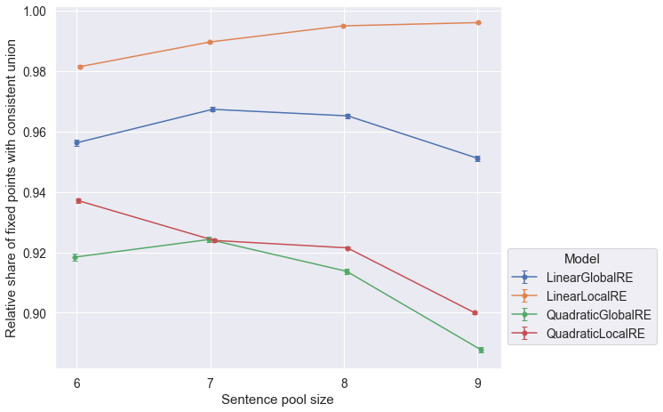
5.2.3.3 Results Grouped by Configuration of Weights
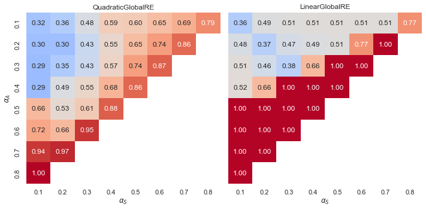

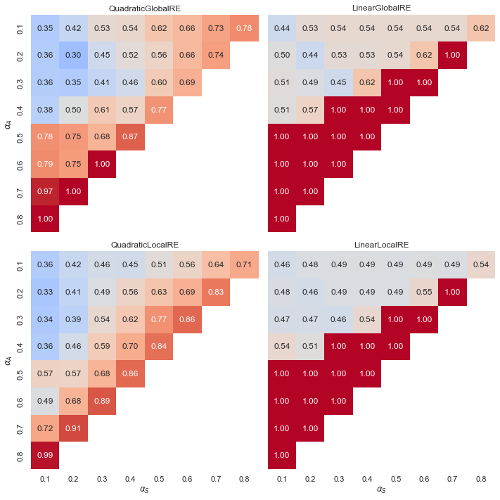
5.3 Conclusion
Overall, the present ensemble study concerning the three perspectives on the consistency of outputs of RE simulations provides positive results with respect to model variation. The overall relative shares of consistent outputs, inconsistency-eliminating and consistency-preserving cases, as well as consistent unions are satisfactorily high for all model variants.
According to analysing the results further with respect to the sentence pool size, LinearLocalRE seems to have the edge over the other model variants in view of increasing sentence pool sizes. Nonetheless, the severely restricted sample that forms the basis of this report would make an extrapolation to even larger sentence pool sizes a highly speculative matter. Further research in this direction is required.
In the more fine-grained analysis according to weigh configurations, we can observe regions of weight configurations that yield desirable behaviour. Moreover, these regions are robust across model variants. This provides at least some motivation to prefer some configurations over others. In particular, it is beneficial to consistency considerations if \(\alpha_{A} > \alpha_{F}\).
There is a notable difference between quadratic and linear model variants (smooth transitions vs. tipping line), but on its own, this does not serve as a criterion to prefer some model variants over others. See the Appendix A for a presentation of analytical results that explain why linear model variants exhibit tipping lines.
The main driving force for dialectical consistency is the desideratum of account. Since the choice of new theories is confined to dialectically consistent theories, account will favour commitments that are dialectically consistent.↩︎